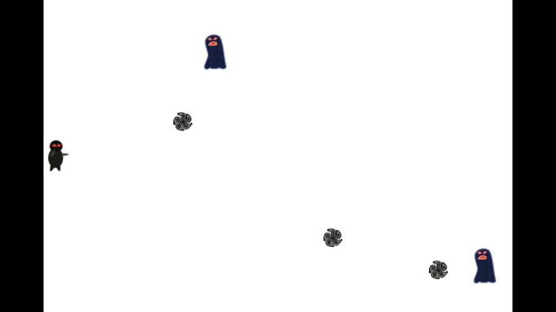

Now, we want to let the hero fire some bullets to kill the enemies, add the codes below to set the layer touch-enabled.
// cpp with cocos2d-x
this->setIsTouchEnabled(true);
Then we could receive the touch event now. Declare the callback function
void ccTouchesEnded(cocos2d::CCSet* touches, cocos2d::CCEvent* event);
in HelloWorldScene.h, and implement the function in HelloWorldScene.cpp.
// cpp with cocos2d-x
void HelloWorld::ccTouchesEnded(CCSet* touches, CCEvent* event)
{
// Choose one of the touches to work with
CCTouch* touch = (CCTouch*)( touches->anyObject() );
CCPoint location = touch->locationInView(touch->view());
location = CCDirector::sharedDirector()->convertToGL(location);
// Set up initial location of projectile
CCSize winSize = CCDirector::sharedDirector()->getWinSize();
CCSprite *projectile = CCSprite::spriteWithFile("Projectile.png",
CCRectMake(0, 0, 20, 20));
projectile->setPosition( ccp(20, winSize.height/2) );
// Determinie offset of location to projectile
int offX = location.x - projectile->getPosition().x;
int offY = location.y - projectile->getPosition().y;
// Bail out if we are shooting down or backwards
if (offX <= 0) return;
// Ok to add now - we've double checked position
this->addChild(projectile);
// Determine where we wish to shoot the projectile to
int realX = winSize.width
+ (projectile->getContentSize().width/2);
float ratio = (float)offY / (float)offX;
int realY = (realX * ratio) + projectile->getPosition().y;
CCPoint realDest = ccp(realX, realY);
// Determine the length of how far we're shooting
int offRealX = realX - projectile->getPosition().x;
int offRealY = realY - projectile->getPosition().y;
float length = sqrtf((offRealX * offRealX)
+ (offRealY*offRealY));
float velocity = 480/1; // 480pixels/1sec
float realMoveDuration = length/velocity;
// Move projectile to actual endpoint
projectile->runAction( CCSequence::actions(
CCMoveTo::actionWithDuration(realMoveDuration, realDest),
CCCallFuncN::actionWithTarget(this,
callfuncN_selector(HelloWorld::spriteMoveFinished)),
NULL) );
}
Ok, build and run, touch the screen(on the emulator? click the screen!), and enjoy the effect.
